คู่มือใช้งาน NerdMiner รุ่นไลท์
เครื่องขุด Bitcoin แบบลุ้นโชค (solo) บนบอร์ดจอสัมผัส 2.8 นิ้ว พร้อมหน้าข้อมูลราคา หุ้น อากาศ แผ่นดินไหว น้ำท่วม น้ำขึ้นลง หวย และปฏิทินวันพระ รุ่นไลท์ไม่มีเสียง ไม่ต้องต่อลำโพง · ใช้ไฟ USB 5 V · ใช้ WiFi 2.4 GHz
1 เสียบไฟและเปิดเครื่อง
เสียบสาย USB เข้าที่บอร์ด แล้วต่ออีกด้านกับที่ชาร์จมือถือ (5 V, 1 A ขึ้นไป) หรือพอร์ต USB ของคอม ไม่มีสวิตช์ เสียบไฟแล้วเครื่องเปิดเอง
- จอขึ้นโลโก้ร้านแวบหนึ่ง (ประมาณ 2 วินาที)
- ครั้งแรกเท่านั้น: ขึ้นหน้า Touch calibration ให้แตะกลางเครื่องหมาย + สีส้มที่ขึ้นทีละมุม ครบ 4 มุม (ซ้ายบน ขวาบน ขวาล่าง ซ้ายล่าง) ใช้ปลายเล็บหรือปากกาปลายมนจะแม่นกว่า มุมที่แตะแล้วจะเป็นจุดเขียว จบแล้วขึ้น Calibrated
- ถ้าแตะพลาด เครื่องจะขึ้น “Those taps did not line up” แล้วให้แตะใหม่เอง
- เครื่องที่ยังไม่เคยตั้ง WiFi จะไปหน้า Choose your Wi-Fi ทันที (หัวข้อ 2) ส่วนเครื่องที่ตั้งแล้วจะต่อ WiFi เดิมเองแล้วเข้าหน้าหลัก

ปุ่มบนบอร์ด: ข้างพอร์ต USB มีปุ่มเล็ก 2 ปุ่ม RST คือเริ่มเครื่องใหม่ ส่วน BOOT ใช้เปลี่ยนหน้าจอได้ (หัวข้อ 5)
2 ต่อ WiFi ครั้งแรก
เลือกได้ 2 ทาง: ทาง ก. ทำบนจอเครื่องเลย ง่ายที่สุด · ทาง ข. ใช้มือถือ เหมาะกับคนที่ไม่สะดวกพิมพ์รหัสบนจอเล็ก
ทาง ก. เลือก WiFi บนจอ
- หน้า Choose your Wi-Fi เครื่องค้นหา WiFi รอบตัวแล้วเรียงตามความแรงสัญญาณ แตะชื่อ WiFi บ้านคุณ ไม่เห็นชื่อ: ใช้ลูกศร ▲ ▼ ด้านขวา หรือแตะ Rescan รูปแม่กุญแจคือ WiFi ที่มีรหัส
- หน้า Password for … พิมพ์รหัสด้วยแป้นบนจอ แตะช้าๆ ทีละตัว ปุ่ม ⇧ สลับตัวพิมพ์ใหญ่ ปุ่ม #+= ไปหน้าตัวเลขและสัญลักษณ์ ปุ่ม ⌫ ลบ รูปตาด้านขวาของช่องใช้ซ่อน/แสดงรหัส แนะนำให้แตะดูก่อนเพื่อเช็กว่าพิมพ์ถูก
- แตะ Join เครื่องขึ้น “Connecting / Please wait...” ไม่เกิน 20 วินาที รหัสผิดจะกลับมาที่แป้นพร้อมข้อความสีแดง “Could not join, check the password” แตะ Back ถ้าต้องการเลือก WiFi อื่น
- ต่อสำเร็จจะขึ้นหน้า Wi-Fi connected บอกที่อยู่หน้าตั้งค่า เช่น
http://192.168.1.192/(ของแต่ละบ้านไม่เหมือนกัน) และชื่อสำรองnerdminer-xxxxxxx.localใช้มือถือที่ต่อ WiFi เดียวกันสแกน QR ด้านขวาก็เปิดหน้าตั้งค่าได้เลย แตะ Start เพื่อเข้าหน้าหลัก


ทาง ข. ตั้งค่าผ่านมือถือ (ฮอตสปอต)
- ที่หน้า Choose your Wi-Fi แตะปุ่ม Use phone setup ด้านล่างขวา
- จอแสดงชื่อ WiFi ของเครื่อง เช่น NerdMinerAP-6118472 และรหัส (PW) ในกรอบเหลือง แต่ละเครื่องไม่เหมือนกัน
- ใช้กล้องมือถือสแกน QR บนจอ แตะไอคอน QR ที่ขึ้นมา (ภาพ ก) แล้วแตะ เชื่อมต่อ (ภาพ ข) หรือเข้าเมนู WiFi ของมือถือแล้วพิมพ์รหัสเอง
- หน้าตั้งค่าจะเด้งขึ้นเอง ถ้าไม่ขึ้น ในเมนู WiFi จะเห็น NerdMinerAP ขึ้นว่า “ต้องได้รับอนุญาต” ให้แตะชื่อนั้น (ภาพ ค) หรือเปิดเบราว์เซอร์ไปที่
http://192.168.4.1 - แตะ Configure WiFi (ภาพ ง) แตะชื่อ WiFi บ้านในรายการ ชื่อจะไปอยู่ในช่อง SSID เอง พิมพ์รหัสในช่อง Password ติ๊ก Show Password เพื่อเช็ก (ภาพ จ)
- เลื่อนลง ช่อง Your BTC address ใส่ที่อยู่รับ Bitcoin ของคุณ ช่องอื่นปล่อยไว้ได้ (ภาพ ฉ) เลื่อนลงล่างสุด แตะ Save เครื่องจะต่อ WiFi บ้านแล้วเริ่มขุด ใส่ที่อยู่ BTC ตรงนี้แล้วข้ามหัวข้อ 3 ได้

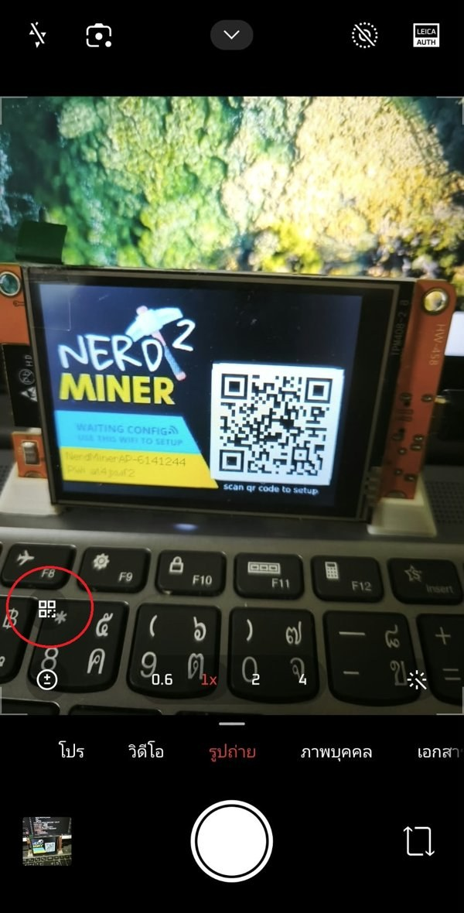
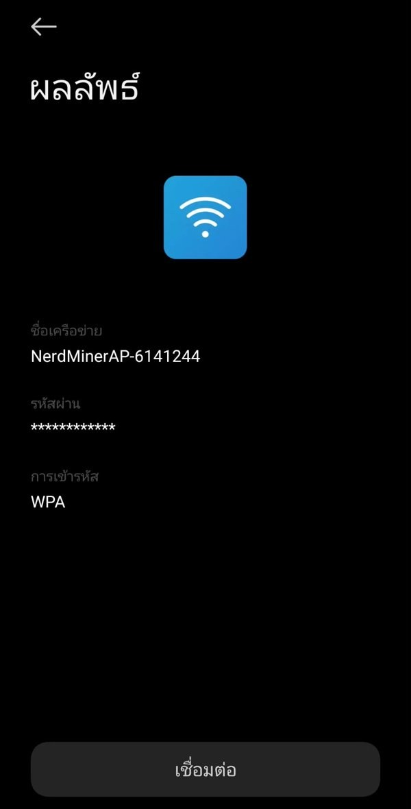
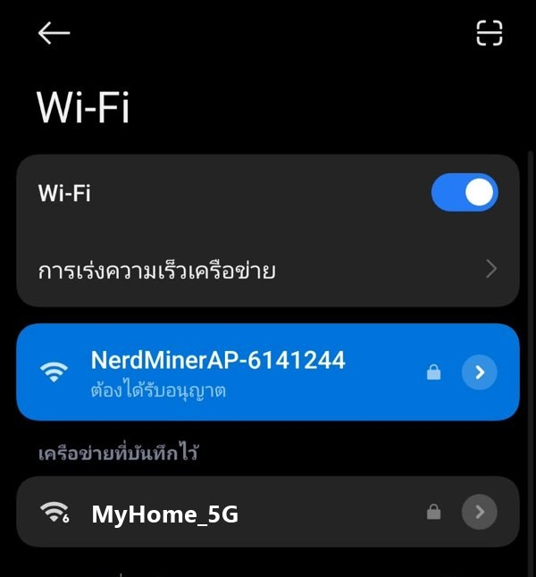
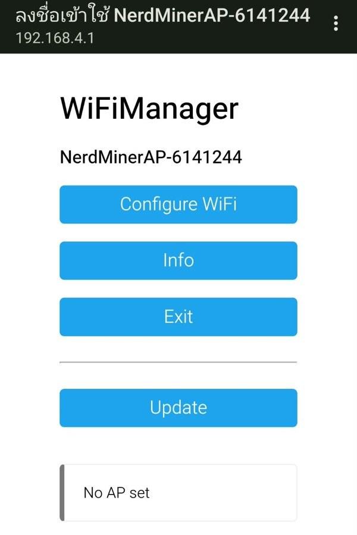
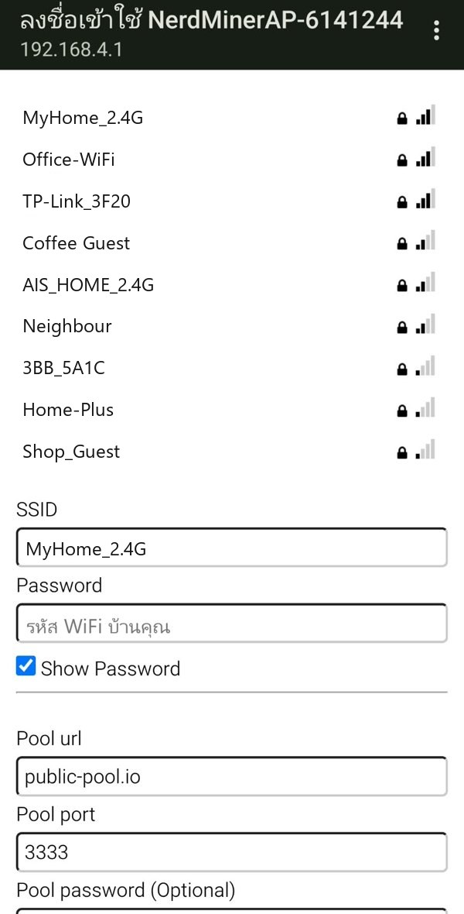
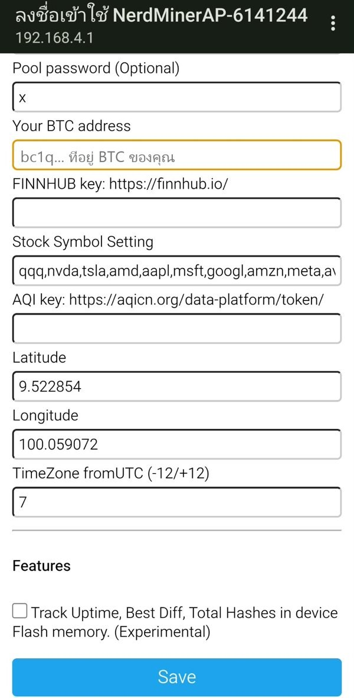
3 ใส่ที่อยู่ BTC ให้เครื่องเริ่มขุด
ยังไม่ใส่ที่อยู่ BTC เครื่องจะยังไม่ขุด และหน้า MINING มีป้ายเหลืองบอกที่อยู่หน้าตั้งค่า
- ใช้มือถือหรือคอมที่ต่อ WiFi บ้านเดียวกับเครื่อง เปิดเบราว์เซอร์ไปที่อยู่ที่จดไว้ เช่น
http://192.168.1.192/ลืมก็ดูได้ที่แถบบนของหน้า HOME หรือ MINING - หัวข้อ MINING ช่อง BTC address ลบ
yourBtcAddressออก แล้ววางที่อยู่รับ Bitcoin ของคุณ (มักขึ้นต้นด้วย bc1) - ช่องอื่นปล่อยไว้ได้ Pool แนะนำ
public-pool.ioพอร์ต3333รหัส poolx - เลื่อนลงล่างสุด แตะ Save and restart รอประมาณ 10 วินาที หน้า MINING จะขึ้นตัวเลข Hashrate (KH/s) แปลว่าขุดอยู่

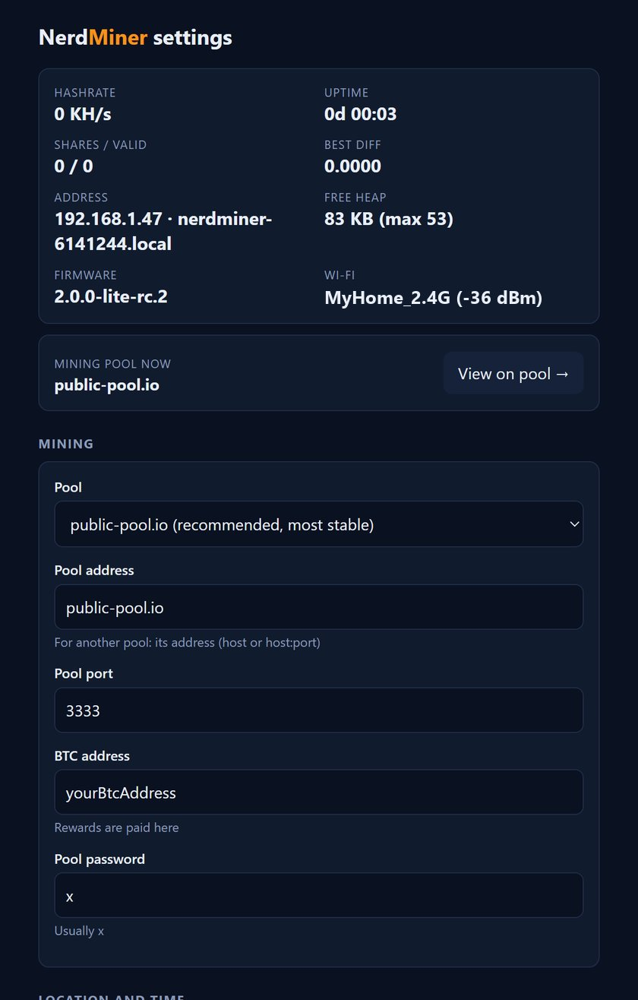
4 ปลดล็อกเครื่อง
เครื่องที่แฟลชเองจะขึ้นหน้า “เครื่องนี้ยังไม่ได้ปลดล็อก” พร้อมรหัสเครื่องหลังต่อ WiFi
- ส่ง “รหัสเครื่อง” บนจอให้ผู้พัฒนาทาง LINE: แตะแถบเขียวด้านล่างจอ เครื่องจะขึ้น QR LINE ให้สแกนด้วยมือถือ (แตะจออีกครั้งเพื่อกลับ) หรือแอดจากปุ่มด้านล่าง
- ผู้พัฒนาส่ง “รหัสปลดล็อก” กลับมา (ตัวอักษร 86 ตัว)
- เปิด
http://<IP ที่ขึ้นบนจอ>/วางรหัสในช่อง “รหัสปลดล็อก” แล้วกด ปลดล็อก
ปลดล็อกครั้งเดียว อัปเดตเฟิร์มแวร์ภายหลังก็ยังปลดล็อกอยู่ ต้องปลดใหม่เฉพาะหลังล้างเครื่องทั้งหมด (ใช้รหัสเดิมได้) หน้าเว็บตั้งค่าของเครื่องที่ยังไม่ปลดล็อกก็มีปุ่ม “แอด LINE ผู้พัฒนา”
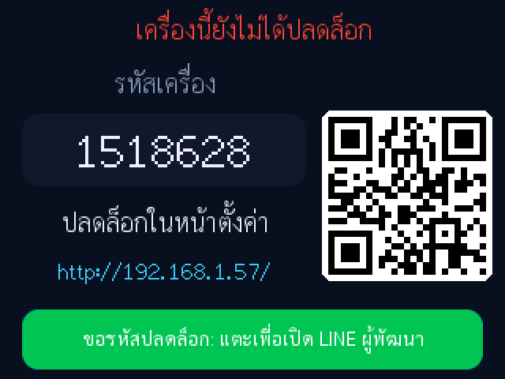
5 วิธีใช้จอสัมผัสและปุ่ม
จอเป็นแบบกดน้ำหนัก (resistive) ใช้ปลายนิ้วกดให้แน่นกว่าจอมือถือเล็กน้อย
| ทำแบบนี้ | ผล |
|---|---|
| ปัดซ้าย / ขวา | ไปหน้าถัดไป / ย้อนหน้า |
| ลากขึ้น / ลง | ปรับความสว่างจอ ขึ้นคือสว่างขึ้น |
| แตะไอคอนบ้าน | กลับหน้า HOME (แตะชื่อหน้าตรงแถบบนก็ได้) |
| แตะไอคอนเฟือง | เปิดหน้าตั้งค่าบนเครื่อง |
| แตะไอคอนลูกศรวน | เปิด / ปิดการเปลี่ยนหน้าอัตโนมัติ |
| แตะกล่องบนหน้า HOME | เปิดหน้านั้นโดยตรง |
ปุ่ม BOOT บนบอร์ด
| กด | ผล |
|---|---|
| 1 ครั้ง | หน้าถัดไป |
| 2 ครั้ง | ย้อนหน้า |
| 3 ครั้ง | กลับหน้า HOME |
| ค้าง 5 วินาที | ล้างค่าที่ตั้งไว้ทั้งหมด กลับไปเริ่มที่หน้าเลือก WiFi ใหม่ (ใช้เมื่อจำเป็นเท่านั้น) |
6 หน้าจอทั้งหมด
ปัดเรียงตามลำดับนี้ หน้าสุดท้ายปัดต่อจะวนกลับหน้าแรก ข้อมูลแต่ละหน้าโหลดจากอินเทอร์เน็ตตอนเปิดดู ครั้งแรกอาจรอสักครู่


7 ตั้งค่าบนเครื่อง
แตะไอคอนเฟืองที่แถบบน มี 2 แท็บ คือ DISPLAY และ SYSTEM แตะแถวเพื่อเปลี่ยนค่า แตะ BACK มุมซ้ายบนเพื่อออก
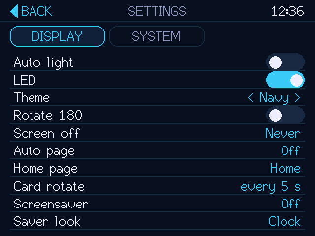
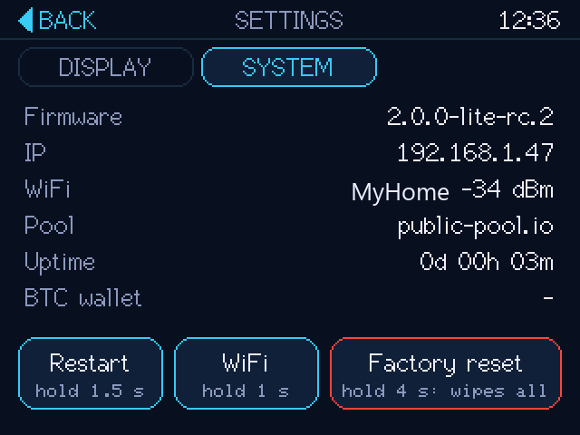
| DISPLAY | ความหมาย |
|---|---|
| Auto light | ปรับความสว่างจอตามแสงในห้องเอง |
| LED | ไฟ LED สีด้านหลังบอร์ดกะพริบตอนทำงาน ปิดได้ถ้ารบกวนตอนนอน |
| Theme | ชุดสีหน้าจอ แตะซ้าย/ขวาเพื่อเลือก |
| Rotate 180 | กลับหัวจอ เมื่อวางเครื่องให้สาย USB อยู่อีกด้าน |
| Screen off | ปิดจอเองเมื่อไม่ได้แตะครบ 5 / 15 / 30 นาที เครื่องยังขุดต่อ แตะจอเพื่อเปิด |
| Auto page | เปลี่ยนหน้าเองตามเวลาที่ตั้ง เริ่มหลังไม่ได้แตะจอ 30 วินาที |
| Home page | หน้าที่ไอคอนบ้านพาไป |
| Card rotate | ความเร็วที่กล่องบนหน้า HOME สลับเนื้อหา |
| Screensaver / Saver look | ภาพพักหน้าจอเมื่อไม่ได้แตะครบเวลาที่ตั้ง และรูปแบบ เช่น Clock, Stars, Fire |
SYSTEM แสดงรุ่นเฟิร์มแวร์ IP ชื่อและความแรง WiFi pool เวลาทำงาน และที่อยู่ BTC ปุ่มด้านล่างต้องกดค้างกันกดพลาด:
- Restart ค้าง 1.5 วินาที: เริ่มเครื่องใหม่
- WiFi ค้าง 1 วินาที: เปลี่ยน WiFi กลับไปหน้า Choose your Wi-Fi (มีปุ่ม Keep current ถ้าเปลี่ยนใจ)
- Factory reset ค้าง 4 วินาที: ล้างทุกอย่าง กลับเป็นเครื่องใหม่
8 หน้าเว็บตั้งค่า
เปิด http://<IP ของเครื่อง>/ จากมือถือหรือคอมใน WiFi เดียวกัน ส่วนบนแสดงสถานะการขุดสด ใต้ลงมาเป็นค่าที่แก้ได้ แก้เสร็จแตะ Save and restart ทุกครั้ง
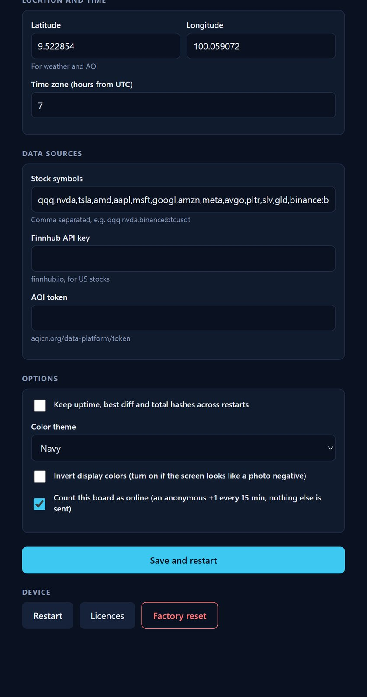
| หัวข้อ | ใช้ทำอะไร |
|---|---|
| MINING | เลือก pool ใส่ที่อยู่ BTC (หัวข้อ 3) |
| LOCATION | พิกัดบ้าน (Latitude / Longitude) ใช้กับอากาศ ค่าฝุ่น น้ำขึ้นลง ระยะแผ่นดินไหว และสถานีน้ำ หาได้จาก Google Maps: กดค้างที่บ้านแล้วคัดลอกตัวเลขสองตัว · Time zone ของไทยคือ 7 |
| DATA SOURCES | รายชื่อหุ้นที่จะแสดง คั่นด้วยจุลภาค เช่น qqq,nvda,aapl · คีย์ Finnhub (ราคาหุ้น) และ AQI token (ค่าฝุ่น) ขอฟรีได้ที่ finnhub.io และ aqicn.org |
| OPTIONS | จำสถิติการขุดข้ามการรีสตาร์ท · ชุดสี · Invert display colors (ติ๊กเมื่อสีจอเพี้ยนเหมือนฟิล์มเนกาทีฟ ปกติเครื่องตั้งให้เองตามรุ่นจอ) · นับเครื่องออนไลน์แบบไม่ระบุตัวตน |
| DEVICE | Restart · Licences (ไลเซนส์ซอฟต์แวร์) · Factory reset |
9 แก้ปัญหาที่พบบ่อย
| อาการ | วิธีแก้ |
|---|---|
| แตะจอไม่ตรงจุด | ตั้งค่าจอสัมผัสใหม่: เสียบไฟใหม่แล้วกดนิ้วค้างบนจอตอนโลโก้ขึ้น (หัวข้อ 1) |
| แตะจอไม่ค่อยติด | จอเป็นแบบกดน้ำหนัก กดด้วยปลายนิ้วให้แน่นขึ้นหรือใช้ปลายเล็บ |
| หา WiFi บ้านไม่เจอ | เครื่องเห็นเฉพาะ 2.4 GHz แตะ Rescan และวางเครื่องใกล้เราเตอร์ขึ้น |
| Hashrate เป็น 0 | ยังไม่ได้ใส่ที่อยู่ BTC (หน้า MINING มีป้ายเหลือง) ใส่ตามหัวข้อ 3 |
| ลืม IP ของเครื่อง | ดูที่แถบบนของหน้า HOME / MINING หรือ ตั้งค่า > SYSTEM |
| ย้ายบ้าน / เปลี่ยนเราเตอร์ | ตั้งค่า > SYSTEM > กดค้าง WiFi แล้วเลือก WiFi ใหม่ ถ้าเปิดเครื่องแล้วต่อ WiFi เดิมไม่ได้ จะขึ้นหน้าเลือก WiFi ให้เอง |
| สีจอเพี้ยน | หน้าเว็บ > OPTIONS > ติ๊ก Invert display colors แล้ว Save and restart |
| ข้อมูลไม่ขึ้น | เปิดหน้านั้นแล้วรอสักครู่ ข้อมูลต้องใช้อินเทอร์เน็ต ถ้ายังไม่ขึ้นลองรีสตาร์ท |
| จอดับ | อาจตั้ง Screen off ไว้ แตะจอหนึ่งครั้งเพื่อเปิด |
| อยากเริ่มใหม่ทั้งหมด | ตั้งค่า > SYSTEM > กดค้าง Factory reset 4 วินาที หรือกดปุ่ม BOOT ค้าง 5 วินาที |
10 เรื่องควรรู้และไลเซนส์
- การขุดแบบลุ้นโชค: ถ้าวันหนึ่งเจอบล็อก รางวัลทั้งบล็อกเข้ากระเป๋าคุณ แต่โอกาสต่ำมาก ใกล้เคียงการถูกรางวัลใหญ่ ไม่ใช่รายได้ประจำ ให้มองเป็นของสะสม ของตกแต่งโต๊ะ และจอข้อมูลประจำวัน
- เครื่องกินไฟประมาณ 1 วัตต์ เปิดทิ้งไว้ตลอดได้ ค่าที่ตั้งไว้เก็บในเครื่อง ถอดปลั๊กไม่หาย
- ข้อมูลในหน้าต่างๆ มาจากแหล่งข้อมูลสาธารณะ ใช้ประกอบการตัดสินใจเท่านั้น
- ซอฟต์แวร์พัฒนาต่อจากโครงการ NerdMiner v2 (ไลเซนส์ MIT) รายชื่อซอฟต์แวร์โอเพนซอร์สและไลเซนส์ทั้งหมดดูได้ที่
http://<IP>/licenses
ติดต่อผู้พัฒนา
ขอรหัสปลดล็อก แจ้งปัญหา หรือสอบถาม ทาง LINE sfttech2000 ขอรหัสปลดล็อกให้ส่งรหัสเครื่องที่ขึ้นบนจอมาด้วย